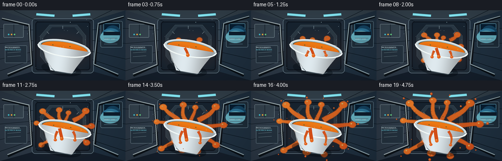
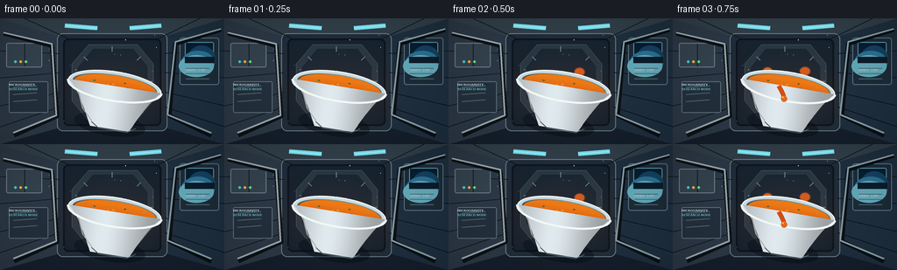

CODING AGENTS AS PIXEL WORLD MODELS
traex/GPT-5.6-Sol · mechanics_0000
点击播放 · 原生 RGB 像素
逐轮保存的候选
回放视频、检查图与代码变化。
每份候选均可单独播放。实际图片检查记录在下方工具轨迹中。
候选 01播放与检查图
点击播放 · 原生 RGB 像素


展开代码变化
--- 上一保存版本
+++ 本次保存版本
@@ -0,0 +1,340 @@
+from pathlib import Path
+import math
+import numpy as np
+from PIL import Image, ImageDraw, ImageFilter, ImageFont
+import artifact_io
+
+# Procedural illustration of a tilted soup bowl in microgravity.
+# Supersampling keeps the small 256x144 deliverable clean and cinematic.
+W, H, N, SS = 256, 144, 20, 4
+SW, SH = W * SS, H * SS
+rng = np.random.default_rng(17)
+
+def sc(v): return int(round(v * SS))
+def pts(seq): return [(sc(x), sc(y)) for x, y in seq]
+def smoothstep(x):
+ x = max(0.0, min(1.0, x))
+ return x*x*(3-2*x)
+
+def rgba_layer():
+ return Image.new('RGBA', (SW, SH), (0,0,0,0))
+
+def line(draw, xy, fill, width=1, joint='curve'):
+ draw.line(pts(xy), fill=fill, width=max(1, sc(width)), joint=joint)
+
+def ellipse(draw, box, fill, outline=None, width=1):
+ b=tuple(sc(v) for v in box)
+ draw.ellipse(b, fill=fill, outline=outline, width=max(1,sc(width)))
+
+def rounded(draw, box, radius, fill, outline=None, width=1):
+ draw.rounded_rectangle(tuple(sc(v) for v in box), radius=sc(radius), fill=fill,
+ outline=outline, width=max(1, sc(width)))
+
+def make_background():
+ yy, xx = np.mgrid[0:SH, 0:SW]
+ # dim steel interior with a cool pool of light around the work area
+ edge = np.sqrt(((xx-SW*.50)/(SW*.72))**2 + ((yy-SH*.51)/(SH*.85))**2)
+ glow = np.clip(1-edge,0,1)
+ top = yy/SH
+ arr = np.empty((SH,SW,3),dtype=np.float32)
+ arr[...,0] = 10 + 20*glow + 8*top
+ arr[...,1] = 18 + 31*glow + 9*top
+ arr[...,2] = 28 + 46*glow + 11*top
+ # gentle blue luminescence on right
+ rg = np.exp(-(((xx-SW*.83)/(SW*.18))**2 + ((yy-SH*.25)/(SH*.32))**2))
+ arr[...,0] += 4*rg; arr[...,1] += 14*rg; arr[...,2] += 26*rg
+ im=Image.fromarray(np.uint8(np.clip(arr,0,255)), 'RGB').convert('RGBA')
+ d=ImageDraw.Draw(im,'RGBA')
+ # corridor planes, all converging toward the rear module
+ d.polygon(pts([(0,0),(65,20),(72,124),(0,144)]), fill=(43,55,68,255))
+ d.polygon(pts([(256,0),(190,20),(185,124),(256,144)]), fill=(30,46,61,255))
+ d.polygon(pts([(0,0),(256,0),(190,20),(65,20)]), fill=(48,61,71,255))
+ d.polygon(pts([(0,144),(72,124),(185,124),(256,144)]), fill=(20,30,42,255))
+ # aft bulkhead and inset hatch
+ rounded(d,(65,17,191,129),7,(31,43,55,255),(104,124,137,230),1)
+ rounded(d,(72,23,184,123),6,(22,34,46,255),(13,20,29,255),2)
+ d.polygon(pts([(101,30),(157,30),(175,52),(175,94),(157,115),(99,115),(82,94),(82,52)]),
+ fill=(39,55,67,255), outline=(119,143,153,220))
+ d.polygon(pts([(106,35),(152,35),(168,55),(168,91),(151,108),(104,108),(89,90),(89,56)]),
+ fill=(24,38,51,255), outline=(14,23,31,255))
+ # rear hatch radial ribs
+ for a in range(0,360,45):
+ ca,sa=math.cos(math.radians(a)),math.sin(math.radians(a))
+ line(d,[(128+40*ca,72+34*sa),(128+46*ca,72+40*sa)],(116,137,147,150),1)
+ ellipse(d,(123,67,133,77),(15,25,35,255),(110,151,169,170),1)
+ # wall panel seams
+ for y in (37,68,100,124):
+ line(d,[(0,y),(68,62+(y-68)*.70)],(13,23,31,150),1)
+ line(d,[(256,y),(188,62+(y-68)*.70)],(9,19,27,180),1)
+ line(d,[(28,0),(80,24)],(13,23,31,170),1)
+ line(d,[(228,0),(179,24)],(13,23,31,170),1)
+ # left equipment lockers
+ rounded(d,(7,28,48,56),2,(51,65,76,255),(108,125,133,180),1)
+ line(d,[(28,29),(28,55)],(18,29,38,180),1)
+ rounded(d,(10,72,55,108),2,(34,47,59,255),(91,109,120,180),1)
+ for y in (79,87,95):
+ line(d,[(15,y),(42,y-2)],(94,113,121,130),1)
+ for x,c in [(16,(65,196,209,220)),(22,(238,166,61,220)),(28,(101,208,129,220))]:
+ ellipse(d,(x,48,x+3,51),c)
+ # right science rack and a blue porthole/display
+ rounded(d,(205,22,250,76),3,(28,42,54,255),(90,114,127,200),1)
+ rounded(d,(211,27,244,48),2,(8,29,48,255),(89,151,174,210),1)
+ # Earth-blue curved light in screen
+ ellipse(d,(214,31,246,62),(20,64,93,255))
+ ellipse(d,(207,37,245,64),(42,111,145,255))
+ ellipse(d,(204,42,244,67),(96,166,181,210))
+ d.rectangle((sc(211),sc(44),sc(245),sc(51)), fill=(13,28,43,220))
+ for y in (57,63,69):
+ line(d,[(212,y),(239,y)],(75,105,119,160),1)
+ # rails foreground, giving station depth
+ line(d,[(4,17),(59,31),(65,112),(16,134)],(11,18,24,190),5)
+ line(d,[(4,16),(59,29),(64,111),(15,131)],(150,164,168,230),2)
+ line(d,[(252,13),(200,29),(193,111),(241,134)],(9,16,22,200),5)
+ line(d,[(252,12),(200,27),(191,110),(241,131)],(132,153,161,230),2)
+ # cyan overhead strips
+ line(d,[(74,8),(111,11)],(117,221,235,60),5)
+ line(d,[(74,8),(111,11)],(169,241,248,220),1)
+ line(d,[(148,11),(184,8)],(117,221,235,60),5)
+ line(d,[(148,11),(184,8)],(169,241,248,220),1)
+ # small labels
+ try:
+ font=ImageFont.truetype('/usr/share/fonts/truetype/dejavu/DejaVuSans-Bold.ttf',sc(3.4))
+ d.text((sc(10),sc(74)), 'MICROGRAVITY', font=font, fill=(187,205,210,190))
+ d.text((sc(10),sc(79)), 'RESEARCH NODE', font=font, fill=(94,180,196,190))
+ d.text((sc(212),sc(57)), 'ORBIT LAB', font=font, fill=(157,190,198,170))
+ except Exception: pass
+ # fixed stars/dust motes in air, understated
+ for i in range(20):
+ x=float(rng.uniform(55,201)); y=float(rng.uniform(15,128)); r=float(rng.uniform(.18,.45))
+ ellipse(d,(x-r,y-r,x+r,y+r),(190,222,230,int(rng.integers(40,100))))
+ return im
+
+BG=make_background()
+
+# Soup arm configuration: direction, final reach, width, phase/delay.
+ARMS=[
+ (-168,48,9,0.00),(-140,52,11,0.08),(-103,47,10,0.02),(-72,44,9,0.12),
+ (-38,56,12,0.05),(-5,58,11,0.10),(31,48,11,0.00),(67,51,10,0.14),
+ (105,42,12,0.07),(143,54,10,0.11)
+]
+
+def soup_mask_and_tips(cx,cy,t):
+ """Organic connected jets plus their moving tips; generated in image coordinates."""
+ mask=Image.new('L',(SW,SH),0)
+ d=ImageDraw.Draw(mask)
+ tips=[]
+ # central low-gravity sheet, expands beyond the rim while staying surface-tension rounded
+ e=smoothstep(t)
+ ellipse(d,(cx-(35+7*e),cy-(11+5*e),cx+(35+8*e),cy+(11+5*e)),230)
+ for idx,(deg,reaches,basew,delay) in enumerate(ARMS):
+ q=smoothstep((t-delay)/(1-delay)) if t>delay else 0
+ if q <= .005: continue
+ a=math.radians(deg)
+ # Start at visible soup surface; tip grows outward slowly.
+ start=26 if abs(math.sin(a))<.65 else 11
+ reach=start + reaches*q
+ # sideways wave is coherent and modest
+ perp=(-math.sin(a),math.cos(a))
+ bend=math.sin(idx*1.71+t*2.0)*4.2*q
+ path=[]
+ for k in range(18):
+ u=k/17
+ rr=start+(reach-start)*u
+ wav=math.sin(math.pi*u)*bend + math.sin(u*math.pi*2+idx)*1.2*q
+ x=cx+math.cos(a)*rr+perp[0]*wav
+ y=cy+math.sin(a)*rr+perp[1]*wav*.72
+ path.append((x,y))
+ # tapered fluid rope made of overlapping round segments
+ for k in range(len(path)-1):
+ u=k/(len(path)-1)
+ ww=basew*(1-.40*u)*(0.55+0.45*q)
+ line(d,[path[k],path[k+1]],235,ww)
+ # round cap swells due to surface tension
+ tx,ty=path[-1]; rad=basew*(.48+.25*q)
+ ellipse(d,(tx-rad,ty-rad*.83,tx+rad,ty+rad*.83),245)
+ tips.append((tx,ty,rad,idx,q,a))
+ # gently antialias/merge the streams into a continuous liquid sheet
+ mask=mask.filter(ImageFilter.GaussianBlur(sc(.40)))
+ return mask,tips
+
+def paint_soup(mask, cx,cy,t, front=False):
+ """Shade liquid mask with tomato-gold depth and moving highlights."""
+ yy,xx=np.mgrid[0:SH,0:SW]
+ # warm directional gradient plus subtle suspended convection bands
+ light=np.clip(.62 + .20*(cx*SS-xx)/(70*SS) + .16*(cy*SS-yy)/(65*SS),0,1)
+ ripple=.5+.5*np.sin(xx/(8.5*SS)+yy/(11*SS)+t*2.4)
+ arr=np.zeros((SH,SW,4),dtype=np.uint8)
+ arr[...,0]=np.clip(184+47*light+7*ripple,0,255)
+ arr[...,1]=np.clip(55+65*light+8*ripple,0,255)
+ arr[...,2]=np.clip(18+22*light,0,255)
+ arr[...,3]=np.asarray(mask)
+ return Image.fromarray(arr,'RGBA')
+
+def add_soup_details(layer, mask, tips, cx,cy,t):
+ d=ImageDraw.Draw(layer,'RGBA')
+ # glossy bead highlights on each advancing rounded tip
+ for tx,ty,r,idx,q,a in tips:
+ if q<.08: continue
+ ellipse(d,(tx-r*.47,ty-r*.40,tx-r*.05,ty-r*.08),(255,216,119,int(95+90*q)))
+ # detached satellite droplet appears late and separates from alternating tendrils
+ birth=.48+(idx%3)*.08
+ qq=smoothstep((t-birth)/(1-birth)) if t>birth else 0
+ if qq>0:
+ gap=4+10*qq+(idx%2)*2
+ dx,dy=math.cos(a),math.sin(a)
+ px=tx+dx*gap; py=ty+dy*gap
+ rr=(1.5+(idx%3)*.65)*(0.4+0.6*qq)
+ ellipse(d,(px-rr,py-rr,px+rr,py+rr),(214,84,25,245),(133,46,19,180),.5)
+ ellipse(d,(px-rr*.48,py-rr*.50,px-rr*.05,py-rr*.08),(255,224,153,200))
+ # herb flecks carried outward within the fluid field
+ md=np.asarray(mask)
+ for j in range(17):
+ ang=(j*2.399 + .35*math.sin(t*2+j))
+ rr=8+(j%6)*7*(.45+.55*smoothstep(t))
+ x=cx+math.cos(ang)*rr; y=cy+math.sin(ang)*rr*.68
+ ix=min(SW-1,max(0,sc(x))); iy=min(SH-1,max(0,sc(y)))
+ if md[iy,ix]>100:
+ r=.65+(j%3)*.22
+ ellipse(d,(x-r,y-r*.55,x+r,y+r*.55),(58,99,45,180))
+ # broad specular streak along upper-left edge of central mass
+ line(d,[(cx-22,cy-7),(cx-8,cy-10),(cx+7,cy-8)],(255,203,97,105),1.25)
+
+
+def make_bowl(cx,cy,angle,t):
+ """Ceramic bowl, constructed locally and rotated as a single floating object."""
+ LW,LH=126,88
+ im=Image.new('RGBA',(sc(LW),sc(LH)),(0,0,0,0))
+ d=ImageDraw.Draw(im,'RGBA')
+ # faint underside shadow/ambient occlusion
+ d.ellipse((sc(23),sc(56),sc(105),sc(82)),fill=(1,8,14,90))
+ # full outer rim (back part remains visible around orange soup)
+ d.ellipse((sc(9),sc(8),sc(117),sc(43)),fill=(201,218,222,255),outline=(244,249,247,255),width=sc(1.2))
+ d.ellipse((sc(14),sc(12),sc(112),sc(38)),fill=(57,69,69,255),outline=(123,145,147,255),width=sc(1))
+ # soup in the bowl, visibly convex
+ yy,xx=np.mgrid[0:sc(LH),0:sc(LW)]
+ sm=Image.new('L',im.size,0); sd=ImageDraw.Draw(sm)
+ sd.ellipse((sc(16),sc(13),sc(111),sc(38)),fill=255)
+ sf=np.zeros((sc(LH),sc(LW),4),dtype=np.uint8)
+ val=np.clip(1-(yy-sc(18))/(sc(32)),0,1)
+ sf[...,0]=np.clip(194+42*val,0,255); sf[...,1]=np.clip(62+59*val,0,255); sf[...,2]=20; sf[...,3]=np.asarray(sm)
+ im.alpha_composite(Image.fromarray(sf,'RGBA'))
+ d=ImageDraw.Draw(im,'RGBA')
+ # tiny ingredients on surface
+ for j in range(12):
+ x=23+(j*19)%79; y=20+((j*7)%11)
+ rr=.7+(j%3)*.25
+ d.ellipse((sc(x-rr),sc(y-rr*.6),sc(x+rr),sc(y+rr*.6)),fill=((57,105,48,210) if j%2 else (246,171,54,190)))
+ # bowl body mask with elegantly curved sides
+ body=Image.new('L',im.size,0); bd=ImageDraw.Draw(body)
+ poly=[]
+ for k in range(21):
+ s=k/20; poly.append((10+32*(s**.75),25+49*s))
+ for k in range(20,-1,-1):
+ s=k/20; poly.append((117-30*(s**.75),25+49*s))
+ bd.polygon(pts_local(poly),fill=255)
+ # vertical ceramic gradient
+ Y,X=np.mgrid[0:sc(LH),0:sc(LW)]
+ nx=X/sc(LW)
+ shade=0.72+0.25*np.exp(-((nx-.43)/.25)**2)-.12*np.exp(-((nx-.88)/.18)**2)
+ bv=np.zeros((sc(LH),sc(LW),4),dtype=np.uint8)
+ bv[...,0]=np.clip(186*shade+43,0,255); bv[...,1]=np.clip(201*shade+39,0,255); bv[...,2]=np.clip(207*shade+38,0,255); bv[...,3]=np.asarray(body)
+ im.alpha_composite(Image.fromarray(bv,'RGBA'))
+ d=ImageDraw.Draw(im,'RGBA')
+ # front rim lip and reflected highlights
+ # thick arc via local line sampling
+ arc=[]
+ for k in range(41):
+ a=math.pi*(k/40)
+ arc.append((63+54*math.cos(a),25+17*math.sin(a)))
+ d.line(pts_local(arc),fill=(241,248,246,255),width=sc(2.4))
+ d.line(pts_local([(43,69),(52,75),(85,75),(94,69)]),fill=(110,135,143,130),width=sc(1))
+ d.line(pts_local([(23,38),(31,56),(43,68)]),fill=(251,255,252,145),width=sc(1.2))
+ # small orange overflow creeping over the near rim
+ spill=smoothstep((t-.12)/.88)
+ if spill>0:
+ path=[(52,26),(56,31+8*spill),(60,37+13*spill)]
+ d.line(pts_local(path),fill=(210,77,23,245),width=sc(5.2+2*spill),joint='curve')
+ d.ellipse((sc(57),sc(36+12*spill),sc(64),sc(43+12*spill)),fill=(232,104,31,240))
+ d.ellipse((sc(58),sc(37+12*spill),sc(60),sc(39+12*spill)),fill=(255,209,112,190))
+ # rotate clockwise, then place by visual rim center at local (63,25)
+ rot=im.rotate(angle,resample=Image.Resampling.BICUBIC,expand=True)
+ # image center is close to (63,44), bowl rim center lies 19 px above it
+ x=sc(cx)-rot.width//2
+ y=sc(cy+19)-rot.height//2
+ return rot,(x,y)
+
+def pts_local(seq):
+ return [(sc(x),sc(y)) for x,y in seq]
+
+def foreground_spill(cx,cy,t,angle):
+ layer=rgba_layer(); d=ImageDraw.Draw(layer,'RGBA')
+ q=smoothstep((t-.20)/.80) if t>.20 else 0
+ if q>0:
+ # two rivulets crawl over near lip and float away downward
+ for side,phase in [(-1,0),(1,1)]:
+ x0=cx+side*(12+8*phase)
+ path=[]
+ for k in range(13):
+ u=k/12; x=x0+side*(4*u+4*math.sin(u*math.pi)*q)
+ y=cy+5+u*(9+21*q)+math.sin(u*5+phase)*1.2*q
+ path.append((x,y))
+ for k in range(12):
+ u=k/12
+ line(d,[path[k],path[k+1]],(212,76+int(20*u),22,245),5.5*(1-.45*u))
+ tx,ty=path[-1]
+ ellipse(d,(tx-3.2,ty-2.7,tx+3.2,ty+2.7),(225,92,26,245))
+ ellipse(d,(tx-1.5,ty-1.4,tx-.3,ty-.3),(255,210,121,190))
+ return layer
+
+def render_frame(fi):
+ t=fi/(N-1)
+ # Entire floating system gently drifts and precesses, while camera remains anchored.
+ cx=128 + 1.3*math.sin(t*math.pi*1.35)
+ cy=77 + 1.0*math.sin(t*math.pi*1.1+.3)
+ ang=-9.0 - 2.0*math.sin(t*math.pi*.7)
+ frame=BG.copy()
+ # Soft orange reflected light under the floating subject
+ glow=rgba_layer(); gd=ImageDraw.Draw(glow,'RGBA')
+ ellipse(gd,(cx-66,cy-41,cx+70,cy+55),(225,91,29,17))
+ glow=glow.filter(ImageFilter.GaussianBlur(sc(15)))
+ frame=Image.alpha_composite(frame,glow)
+ mask,tips=soup_mask_and_tips(cx,cy,t)
+ # dark rim around liquid boosts silhouette against busy orbital lab
+ edge=mask.filter(ImageFilter.GaussianBlur(sc(1.1)))
+ outline=Image.new('RGBA',(SW,SH),(88,29,12,0)); outline.putalpha(edge.point(lambda v:int(v*.55)))
+ frame=Image.alpha_composite(frame,outline)
+ soup=paint_soup(mask,cx,cy,t)
+ add_soup_details(soup,mask,tips,cx,cy,t)
+ frame=Image.alpha_composite(frame,soup)
+ # Floating ceramic bowl occludes rearward streams.
+ bowl,pos=make_bowl(cx,cy,ang,t)
+ frame.alpha_composite(bowl,dest=pos)
+ # Near-side rivulets spill toward the viewer/lower field.
+ frame=Image.alpha_composite(frame,foreground_spill(cx,cy,t,ang))
+ # suspended foreground beads, appearing progressively in true 360-degree directions
+ bead=rgba_layer(); bd=ImageDraw.Draw(bead,'RGBA')
+ for j in range(7):
+ birth=.35+j*.045
+ q=smoothstep((t-birth)/(1-birth)) if t>birth else 0
+ if q<=0: continue
+ a=math.radians(j*51-154)
+ rr=45+q*(18+5*(j%3))
+ x=cx+math.cos(a)*rr; y=cy+math.sin(a)*rr*.78
+ r=(1.0+.55*(j%3))*q
+ ellipse(bd,(x-r,y-r,x+r,y+r),(228,101,30,235),(116,38,16,180),.4)
+ ellipse(bd,(x-r*.55,y-r*.60,x-r*.05,y-r*.12),(255,220,145,190))
+ frame=Image.alpha_composite(frame,bead)
+ # mild cinematic vignette
+ arr=np.asarray(frame.convert('RGB')).astype(np.float32)
+ yy,xx=np.mgrid[0:SH,0:SW]
+ rad=((xx-SW/2)/(SW*.72))**2+((yy-SH/2)/(SH*.85))**2
+ vig=np.clip(1-.24*np.maximum(rad-.20,0),.68,1)[...,None]
+ arr=np.uint8(np.clip(arr*vig,0,255))
+ return np.asarray(Image.fromarray(arr).resize((W,H),Image.Resampling.LANCZOS),dtype=np.uint8)
+
+def main():
+ frames=np.stack([render_frame(i) for i in range(N)],axis=0)
+ artifact_io.save(frames,Path(__file__).resolve().parent)
+
+if __name__=='__main__':
+ main()
可观测工具轨迹
实际执行的命令与返回图片。
命令 1exit 0
/bin/bash -lc "cat prompt.txt && printf '\\n---RULES---\\n' && cat GENERATION_RULES.md && printf '\\n---SPEC---\\n' && cat task_spec.json"
命令 2exit 0
/bin/bash -lc "find . -maxdepth 2 -type f -printf '%p %s bytes\\n' | sort && printf '\\nTools:\\n' && command -v ffmpeg || true && command -v blender || true && command -v convert || true && command -v python3 || true"
命令 3exit 0
/bin/bash -lc 'cat artifact_io.py'
命令 4exit 0
/bin/bash -lc "cat > generate.py <<'PY'
from pathlib import Path
import math
import numpy as np
from PIL import Image, ImageDraw, ImageFilter, ImageFont
import artifact_io
# Procedural illustration of a tilted soup bowl in microgravity.
# Supersampling keeps the small 256x144 deliverable clean and cinematic.
W, H, N, SS = 256, 144, 20, 4
SW, SH = W * SS, H * SS
rng = np.random.default_rng(17)
def sc(v): return int(round(v * SS))
def pts(seq): return [(sc(x), sc(y)) for x, y in seq]
def smoothstep(x):
x = max(0.0, min(1.0, x))
return x*x*(3-2*x)
def rgba_layer():
return Image.new('RGBA', (SW, SH), (0,0,0,0))
def line(draw, xy, fill, width=1, joint='curve'):
draw.line(pts(xy), fill=fill, width=max(1, sc(width)), joint=joint)
def ellipse(draw, box, fill, outline=None, width=1):
b=tuple(sc(v) for v in box)
draw.ellipse(b, fill=fill, outline=outline, width=max(1,sc(width)))
def rounded(draw, box, radius, fill, outline=None, width=1):
draw.rounded_rectangle(tuple(sc(v) for v in box), radius=sc(radius), fill=fill,
outline=outline, width=max(1, sc(width)))
def make_background():
yy, xx = np.mgrid[0:SH, 0:SW]
# dim steel interior with a cool pool of light around the work area
edge = np.sqrt(((xx-SW*.50)/(SW*.72))**2 + ((yy-SH*.51)/(SH*.85))**2)
glow = np.clip(1-edge,0,1)
top = yy/SH
arr = np.empty((SH,SW,3),dtype=np.float32)
arr[...,0] = 10 + 20*glow + 8*top
arr[...,1] = 18 + 31*glow + 9*top
arr[...,2] = 28 + 46*glow + 11*top
# gentle blue luminescence on right
rg = np.exp(-(((xx-SW*.83)/(SW*.18))**2 + ((yy-SH*.25)/(SH*.32))**2))
arr[...,0] += 4*rg; arr[...,1] += 14*rg; arr[...,2] += 26*rg
im=Image.fromarray(np.uint8(np.clip(arr,0,255)), 'RGB').convert('RGBA')
d=ImageDraw.Draw(im,'RGBA')
# corridor planes, all converging toward the rear module
d.polygon(pts([(0,0),(65,20),(72,124),(0,144)]), fill=(43,55,68,255))
d.polygon(pts([(256,0),(190,20),(185,124),(256,144)]), fill=(30,46,61,255))
d.polygon(pts([(0,0),(256,0),(190,20),(65,20)]), fill=(48,61,71,255))
d.polygon(pts([(0,144),(72,124),(185,124),(256,144)]), fill=(20,30,42,255))
# aft bulkhead and inset hatch
rounded(d,(65,17,191,129),7,(31,43,55,255),(104,124,137,230),1)
rounded(d,(72,23,184,123),6,(22,34,46,255),(13,20,29,255),2)
d.polygon(pts([(101,30),(157,30),(175,52),(175,94),(157,115),(99,115),(82,94),(82,52)]),
fill=(39,55,67,255), outline=(119,143,153,220))
d.polygon(pts([(106,35),(152,35),(168,55),(168,91),(151,108),(104,108),(89,90),(89,56)]),
fill=(24,38,51,255), outline=(14,23,31,255))
# rear hatch radial ribs
for a in range(0,360,45):
ca,sa=math.cos(math.radians(a)),math.sin(math.radians(a))
line(d,[(128+40*ca,72+34*sa),(128+46*ca,72+40*sa)],(116,137,147,150),1)
ellipse(d,(123,67,133,77),(15,25,35,255),(110,151,169,170),1)
# wall panel seams
for y in (37,68,100,124):
line(d,[(0,y),(68,62+(y-68)*.70)],(13,23,31,150),1)
line(d,[(256,y),(188,62+(y-68)*.70)],(9,19,27,180),1)
line(d,[(28,0),(80,24)],(13,23,31,170),1)
line(d,[(228,0),(179,24)],(13,23,31,170),1)
# left equipment lockers
rounded(d,(7,28,48,56),2,(51,65,76,255),(108,125,133,180),1)
line(d,[(28,29),(28,55)],(18,29,38,180),1)
rounded(d,(10,72,55,108),2,(34,47,59,255),(91,109,120,180),1)
for y in (79,87,95):
line(d,[(15,y),(42,y-2)],(94,113,121,130),1)
for x,c in [(16,(65,196,209,220)),(22,(238,166,61,220)),(28,(101,208,129,220))]:
ellipse(d,(x,48,x+3,51),c)
# right science rack and a blue porthole/display
rounded(d,(205,22,250,76),3,(28,42,54,255),(90,114,127,200),1)
rounded(d,(211,27,244,48),2,(8,29,48,255),(89,151,174,210),1)
# Earth-blue curved light in screen
ellipse(d,(214,31,246,62),(20,64,93,255))
ellipse(d,(207,37,245,64),(42,111,145,255))
ellipse(d,(204,42,244,67),(96,166,181,210))
d.rectangle((sc(211),sc(44),sc(245),sc(51)), fill=(13,28,43,220))
for y in (57,63,69):
line(d,[(212,y),(239,y)],(75,105,119,160),1)
# rails foreground, giving station depth
line(d,[(4,17),(59,31),(65,112),(16,134)],(11,18,24,190),5)
line(d,[(4,16),(59,29),(64,111),(15,131)],(150,164,168,230),2)
line(d,[(252,13),(200,29),(193,111),(241,134)],(9,16,22,200),5)
line(d,[(252,12),(200,27),(191,110),(241,131)],(132,153,161,230),2)
# cyan overhead strips
line(d,[(74,8),(111,11)],(117,221,235,60),5)
line(d,[(74,8),(111,11)],(169,241,248,220),1)
line(d,[(148,11),(184,8)],(117,221,235,60),5)
line(d,[(148,11),(184,8)],(169,241,248,220),1)
# small labels
try:
font=ImageFont.truetype('/usr/share/fonts/truetype/dejavu/DejaVuSans-Bold.ttf',sc(3.4))
d.text((sc(10),sc(74)), 'MICROGRAVITY', font=font, fill=(187,205,210,190))
d.text((sc(10),sc(79)), 'RESEARCH NODE', font=font, fill=(94,180,196,190))
d.text((sc(212),sc(57)), 'ORBIT LAB', font=font, fill=(157,190,198,170))
except Exception: pass
# fixed stars/dust motes in air, understated
for i in range(20):
x=float(rng.uniform(55,201)); y=float(rng.uniform(15,128)); r=float(rng.uniform(.18,.45))
ellipse(d,(x-r,y-r,x+r,y+r),(190,222,230,int(rng.integers(40,100))))
return im
BG=make_background()
# Soup arm configuration: direction, final reach, width, phase/delay.
ARMS=[
(-168,48,9,0.00),(-140,52,11,0.08),(-103,47,10,0.02),(-72,44,9,0.12),
(-38,56,12,0.05),(-5,58,11,0.10),(31,48,11,0.00),(67,51,10,0.14),
(105,42,12,0.07),(143,54,10,0.11)
]
def soup_mask_and_tips(cx,cy,t):
\"\"\"Organic connected jets plus their moving tips; generated in image coordinates.\"\"\"
mask=Image.new('L',(SW,SH),0)
d=ImageDraw.Draw(mask)
tips=[]
# central low-gravity sheet, expands beyond the rim while staying surface-tension rounded
e=smoothstep(t)
ellipse(d,(cx-(35+7*e),cy-(11+5*e),cx+(35+8*e),cy+(11+5*e)),230)
for idx,(deg,reaches,basew,delay) in enumerate(ARMS):
q=smoothstep((t-delay)/(1-delay)) if t>delay else 0
if q <= .005: continue
a=math.radians(deg)
# Start at visible soup surface; tip grows outward slowly.
start=26 if abs(math.sin(a))<.65 else 11
reach=start + reaches*q
# sideways wave is coherent and modest
perp=(-math.sin(a),math.cos(a))
bend=math.sin(idx*1.71+t*2.0)*4.2*q
path=[]
for k in range(18):
u=k/17
rr=start+(reach-start)*u
wav=math.sin(math.pi*u)*bend + math.sin(u*math.pi*2+idx)*1.2*q
x=cx+math.cos(a)*rr+perp[0]*wav
y=cy+math.sin(a)*rr+perp[1]*wav*.72
path.append((x,y))
# tapered fluid rope made of overlapping round segments
for k in range(len(path)-1):
u=k/(len(path)-1)
ww=basew*(1-.40*u)*(0.55+0.45*q)
line(d,[path[k],path[k+1]],235,ww)
# round cap swells due to surface tension
tx,ty=path[-1]; rad=basew*(.48+.25*q)
ellipse(d,(tx-rad,ty-rad*.83,tx+rad,ty+rad*.83),245)
tips.append((tx,ty,rad,idx,q,a))
# gently antialias/merge the streams into a continuous liquid sheet
mask=mask.filter(ImageFilter.GaussianBlur(sc(.40)))
return mask,tips
def paint_soup(mask, cx,cy,t, front=False):
\"\"\"Shade liquid mask with tomato-gold depth and moving highlights.\"\"\"
yy,xx=np.mgrid[0:SH,0:SW]
# warm directional gradient plus subtle suspended convection bands
light=np.clip(.62 + .20*(cx*SS-xx)/(70*SS) + .16*(cy*SS-yy)/(65*SS),0,1)
ripple=.5+.5*np.sin(xx/(8.5*SS)+yy/(11*SS)+t*2.4)
arr=np.zeros((SH,SW,4),dtype=np.uint8)
arr[...,0]=np.clip(184+47*light+7*ripple,0,255)
arr[...,1]=np.clip(55+65*light+8*ripple,0,255)
arr[...,2]=np.clip(18+22*light,0,255)
arr[...,3]=np.asarray(mask)
return Image.fromarray(arr,'RGBA')
def add_soup_details(layer, mask, tips, cx,cy,t):
d=ImageDraw.Draw(layer,'RGBA')
# glossy bead highlights on each advancing rounded tip
for tx,ty,r,idx,q,a in tips:
if q<.08: continue
ellipse(d,(tx-r*.47,ty-r*.40,tx-r*.05,ty-r*.08),(255,216,119,int(95+90*q)))
# detached satellite droplet appears late and separates from alternating tendrils
birth=.48+(idx%3)*.08
qq=smoothstep((t-birth)/(1-birth)) if t>birth else 0
if qq>0:
gap=4+10*qq+(idx%2)*2
dx,dy=math.cos(a),math.sin(a)
px=tx+dx*gap; py=ty+dy*gap
rr=(1.5+(idx%3)*.65)*(0.4+0.6*qq)
ellipse(d,(px-rr,py-rr,px+rr,py+rr),(214,84,25,245),(133,46,19,180),.5)
ellipse(d,(px-rr*.48,py-rr*.50,px-rr*.05,py-rr*.08),(255,224,153,200))
# herb flecks carried outward within the fluid field
md=np.asarray(mask)
for j in range(17):
ang=(j*2.399 + .35*math.sin(t*2+j))
rr=8+(j%6)*7*(.45+.55*smoothstep(t))
x=cx+math.cos(ang)*rr; y=cy+math.sin(ang)*rr*.68
ix=min(SW-1,max(0,sc(x))); iy=min(SH-1,max(0,sc(y)))
if md[iy,ix]>100:
r=.65+(j%3)*.22
ellipse(d,(x-r,y-r*.55,x+r,y+r*.55),(58,99,45,180))
# broad specular streak along upper-left edge of central mass
line(d,[(cx-22,cy-7),(cx-8,cy-10),(cx+7,cy-8)],(255,203,97,105),1.25)
def make_bowl(cx,cy,angle,t):
\"\"\"Ceramic bowl, constructed locally and rotated as a single floating object.\"\"\"
LW,LH=126,88
im=Image.new('RGBA',(sc(LW),sc(LH)),(0,0,0,0))
d=ImageDraw.Draw(im,'RGBA')
# faint underside shadow/ambient occlusion
d.ellipse((sc(23),sc(56),sc(105),sc(82)),fill=(1,8,14,90))
# full outer rim (back part remains visible around orange soup)
d.ellipse((sc(9),sc(8),sc(117),sc(43)),fill=(201,218,222,255),outline=(244,249,247,255),width=sc(1.2))
d.ellipse((sc(14),sc(12),sc(112),sc(38)),fill=(57,69,69,255),outline=(123,145,147,255),width=sc(1))
# soup in the bowl, visibly convex
yy,xx=np.mgrid[0:sc(LH),0:sc(LW)]
sm=Image.new('L',im.size,0); sd=ImageDraw.Draw(sm)
sd.ellipse((sc(16),sc(13),sc(111),sc(38)),fill=255)
sf=np.zeros((sc(LH),sc(LW),4),dtype=np.uint8)
val=np.clip(1-(yy-sc(18))/(sc(32)),0,1)
sf[...,0]=np.clip(194+42*val,0,255); sf[...,1]=np.clip(62+59*val,0,255); sf[...,2]=20; sf[...,3]=np.asarray(sm)
im.alpha_composite(Image.fromarray(sf,'RGBA'))
d=ImageDraw.Draw(im,'RGBA')
# tiny ingredients on surface
for j in range(12):
x=23+(j*19)%79; y=20+((j*7)%11)
rr=.7+(j%3)*.25
d.ellipse((sc(x-rr),sc(y-rr*.6),sc(x+rr),sc(y+rr*.6)),fill=((57,105,48,210) if j%2 else (246,171,54,190)))
# bowl body mask with elegantly curved sides
body=Image.new('L',im.size,0); bd=ImageDraw.Draw(body)
poly=[]
for k in range(21):
s=k/20; poly.append((10+32*(s**.75),25+49*s))
for k in range(20,-1,-1):
s=k/20; poly.append((117-30*(s**.75),25+49*s))
bd.polygon(pts_local(poly),fill=255)
# vertical ceramic gradient
Y,X=np.mgrid[0:sc(LH),0:sc(LW)]
nx=X/sc(LW)
shade=0.72+0.25*np.exp(-((nx-.43)/.25)**2)-.12*np.exp(-((nx-.88)/.18)**2)
bv=np.zeros((sc(LH),sc(LW),4),dtype=np.uint8)
bv[...,0]=np.clip(186*shade+43,0,255); bv[...,1]=np.clip(201*shade+39,0,255); bv[...,2]=np.clip(207*shade+38,0,255); bv[...,3]=np.asarray(body)
im.alpha_composite(Image.fromarray(bv,'RGBA'))
d=ImageDraw.Draw(im,'RGBA')
# front rim lip and reflected highlights
# thick arc via local line sampling
arc=[]
for k in range(41):
a=math.pi*(k/40)
arc.append((63+54*math.cos(a),25+17*math.sin(a)))
d.line(pts_local(arc),fill=(241,248,246,255),width=sc(2.4))
d.line(pts_local([(43,69),(52,75),(85,75),(94,69)]),fill=(110,135,143,130),width=sc(1))
d.line(pts_local([(23,38),(31,56),(43,68)]),fill=(251,255,252,145),width=sc(1.2))
# small orange overflow creeping over the near rim
spill=smoothstep((t-.12)/.88)
if spill>0:
path=[(52,26),(56,31+8*spill),(60,37+13*spill)]
d.line(pts_local(path),fill=(210,77,23,245),width=sc(5.2+2*spill),joint='curve')
d.ellipse((sc(57),sc(36+12*spill),sc(64),sc(43+12*spill)),fill=(232,104,31,240))
d.ellipse((sc(58),sc(37+12*spill),sc(60),sc(39+12*spill)),fill=(255,209,112,190))
# rotate clockwise, then place by visual rim center at local (63,25)
rot=im.rotate(angle,resample=Image.Resampling.BICUBIC,expand=True)
# image center is close to (63,44), bowl rim center lies 19 px above it
x=sc(cx)-rot.width//2
y=sc(cy+19)-rot.height//2
return rot,(x,y)
def pts_local(seq):
return [(sc(x),sc(y)) for x,y in seq]
def foreground_spill(cx,cy,t,angle):
layer=rgba_layer(); d=ImageDraw.Draw(layer,'RGBA')
q=smoothstep((t-.20)/.80) if t>.20 else 0
if q>0:
# two rivulets crawl over near lip and float away downward
for side,phase in [(-1,0),(1,1)]:
x0=cx+side*(12+8*phase)
path=[]
for k in range(13):
u=k/12; x=x0+side*(4*u+4*math.sin(u*math.pi)*q)
y=cy+5+u*(9+21*q)+math.sin(u*5+phase)*1.2*q
path.append((x,y))
for k in range(12):
u=k/12
line(d,[path[k],path[k+1]],(212,76+int(20*u),22,245),5.5*(1-.45*u))
tx,ty=path[-1]
ellipse(d,(tx-3.2,ty-2.7,tx+3.2,ty+2.7),(225,92,26,245))
ellipse(d,(tx-1.5,ty-1.4,tx-.3,ty-.3),(255,210,121,190))
return layer
def render_frame(fi):
t=fi/(N-1)
# Entire floating system gently drifts and precesses, while camera remains anchored.
cx=128 + 1.3*math.sin(t*math.pi*1.35)
cy=77 + 1.0*math.sin(t*math.pi*1.1+.3)
ang=-9.0 - 2.0*math.sin(t*math.pi*.7)
frame=BG.copy()
# Soft orange reflected light under the floating subject
glow=rgba_layer(); gd=ImageDraw.Draw(glow,'RGBA')
ellipse(gd,(cx-66,cy-41,cx+70,cy+55),(225,91,29,17))
glow=glow.filter(ImageFilter.GaussianBlur(sc(15)))
frame=Image.alpha_composite(frame,glow)
mask,tips=soup_mask_and_tips(cx,cy,t)
# dark rim around liquid boosts silhouette against busy orbital lab
edge=mask.filter(ImageFilter.GaussianBlur(sc(1.1)))
outline=Image.new('RGBA',(SW,SH),(88,29,12,0)); outline.putalpha(edge.point(lambda v:int(v*.55)))
frame=Image.alpha_composite(frame,outline)
soup=paint_soup(mask,cx,cy,t)
add_soup_details(soup,mask,tips,cx,cy,t)
frame=Image.alpha_composite(frame,soup)
# Floating ceramic bowl occludes rearward streams.
bowl,pos=make_bowl(cx,cy,ang,t)
frame.alpha_composite(bowl,dest=pos)
# Near-side rivulets spill toward the viewer/lower field.
frame=Image.alpha_composite(frame,foreground_spill(cx,cy,t,ang))
# suspended foreground beads, appearing progressively in true 360-degree directions
bead=rgba_layer(); bd=ImageDraw.Draw(bead,'RGBA')
for j in range(7):
birth=.35+j*.045
q=smoothstep((t-birth)/(1-birth)) if t>birth else 0
if q<=0: continue
a=math.radians(j*51-154)
rr=45+q*(18+5*(j%3))
x=cx+math.cos(a)*rr; y=cy+math.sin(a)*rr*.78
r=(1.0+.55*(j%3))*q
ellipse(bd,(x-r,y-r,x+r,y+r),(228,101,30,235),(116,38,16,180),.4)
ellipse(bd,(x-r*.55,y-r*.60,x-r*.05,y-r*.12),(255,220,145,190))
frame=Image.alpha_composite(frame,bead)
# mild cinematic vignette
arr=np.asarray(frame.convert('RGB')).astype(np.float32)
yy,xx=np.mgrid[0:SH,0:SW]
rad=((xx-SW/2)/(SW*.72))**2+((yy-SH/2)/(SH*.85))**2
vig=np.clip(1-.24*np.maximum(rad-.20,0),.68,1)[...,None]
arr=np.uint8(np.clip(arr*vig,0,255))
return np.asarray(Image.fromarray(arr).resize((W,H),Image.Resampling.LANCZOS),dtype=np.uint8)
def main():
frames=np.stack([render_frame(i) for i in range(N)],axis=0)
artifact_io.save(frames,Path(__file__).resolve().parent)
if __name__=='__main__':
main()
PY
python3 generate.py
python3 - <<'PY'
import numpy as np
from PIL import Image
z=np.load('pixels.npz')['pixels']
print(z.shape,z.dtype,hex(int(z.min())),hex(int(z.max())))
for i in [0,3,7,11,15,19]:
im=np.array(Image.open(f'frames/{i:02d}.png'))
orange=(im[:,:,0]>160)&(im[:,:,0]>im[:,:,1]*1.45)&(im[:,:,1]>45)
print(i, 'mean',im.mean((0,1)).round(1),'orange',orange.sum())
PY"命令 5exit 0
/bin/bash -lc "python3 - <<'PY'
from pathlib import Path
from PIL import Image
import numpy as np, hashlib
frames=[]
for i in range(20):
p=Path('frames')/f'{i:02d}.png'
im=np.asarray(Image.open(p))
assert im.shape==(144,256,3) and im.dtype==np.uint8
frames.append(im)
a=np.stack(frames)
d=np.mean(np.abs(a[1:].astype(float)-a[:-1].astype(float)),axis=(1,2,3))
print('frame array:',a.shape,a.dtype)
print('temporal MAE:',np.round(d,3).tolist())
print('unique frames:',len({hashlib.sha256(x.tobytes()).hexdigest() for x in a}))
print('pixels.npz:',Path('pixels.npz').stat().st_size,'bytes')
print('index.html:',Path('index.html').stat().st_size,'bytes')
print('inspection:',Image.open('inspection.png').size)
PY
python3 -m py_compile generate.py
find . -maxdepth 2 -type f -printf '%p %s bytes\\n' | sort"保存候选 1 份；完成命令 5 次；可验证图片返回 0 张。原始 API 响应与完整日志保留在本地。